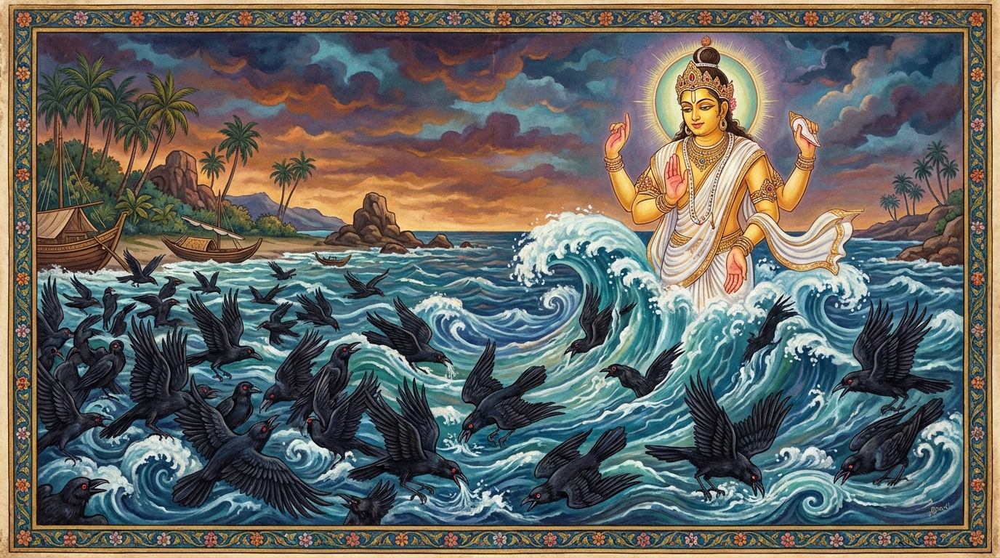

6. සමුද්දකාක ජාතකය (146)
“අපි නු හනුකා සන්තා” (අපගේ හකු වෙහෙසට පත්ව ඇත නොවේ ද?) යන මේ ජාතක ධර්ම දේශනාව බුදුරජාණන් වහන්සේ ජේතවනාරාමයේ වැඩ වසන සමයෙහි මහලු තෙරවරුන් පිරිසක් අරබයා දේශනා කරන ලද්දකි. ඔවුහු ගිහි කල සැවැත් නුවර මහත් ධන සම්පත් ඇති, ඔවුනොවුන්ට හිතවත් යහළුවෝ වූහ. එකට එක්ව පින්කම් කළ ඔවුහු, ශාස්තෘන් වහන්සේගේ ධර්ම දේශනාව අසා, “අපි දැන් මහලු වූවෝ වෙමු. ගිහි ගෙයි වාසයෙන් අපට ඇති ඵලය කුමක් ද? ශාස්තෘන් වහන්සේ වෙත පැවිදි වී රමණීය වූ බුද්ධ ශාසනයෙහි මහණ දම් පුරා දුක් කෙළවර කරමු” යි සිතා, සියලු ධන සම්පත් දූ දරුවන්ට පවරා දී, කඳුළු පිරුණු මුහුණු ඇති ඥාති පිරිස අතහැර, බුදුරජාණන් වහන්සේ වෙතින් පැවිද්ද ඉල්ලා මහණ වූහ. එසේ පැවිදි වූ නමුත් පැවිද්දට සරිලන මහණ දම් නොපිරූහ. මහලු හෙයින් ධර්මය ද ඉගෙන නොගත්හ. ගිහි කල මෙන් පැවිදි වූ පසුව ද විහාරය කෙළවර පන්සලක් කරවාගෙන එකටම විසූහ. පිඬු සිඟා වඩින විට ද වෙනත් තැනකට නොගොස් බොහෝ විට තමන්ගේ දූ පුතුන්ගේ නිවෙස්වලට ම ගොස් වැළඳූහ. ඔවුන් අතරින් එක් භික්ෂුවකගේ ගිහි කල බිරිඳ සියලුම මහලු තෙරවරුන්ට උපකාර කළාය. එබැවින් සෙසු පිරිස ද තමන් ලත් ආහාර රැගෙන ඇගේ නිවසට ම ගොස් හිඳගෙන වළඳති. ඇය ද ඔවුනට හැකි පමණින් සූප ව්යංජන පිළියෙල කර දෙයි. කල් යෑමෙන් ඇය යම් රෝගයක් වැළඳී කළුරිය කළාය. ඉක්බිති ඒ මහලු තෙරවරු විහාරයට ගොස් ඔවුනොවුන්ගේ ගෙල බදාගෙන “රසවත් අහර පිළියෙල කරන දෑත් ඇති (මධුරහත්ථරසා) උපාසිකාව මිය ගියාය” යි කියමින් විහාරය කෙළවර හඬමින් හැසිරුණාහ. ඔවුන්ගේ ශබ්දය අසා භික්ෂූන් එතැනට රැස්ව “ඇවැත්නි, කුමක් නිසා හඬන්නාහු දැ” යි විමසූහ. එවිට ඔවුහු, “අපගේ මිත්ර භික්ෂුවගේ ගිහි කල බිරිඳ වූ, රසවත් අහර දෙන අත් ඇති උපාසිකාව කළුරිය කළාය. ඇය අපට අතිශයින් උපකාර කළාය. දැන් එවැනි අයෙක් කොහෙන් ලබන්න ද? මේ කරුණ නිසා අපි හඬන්නෙමු” යි පැවසූහ.
මොවුන්ගේ මේ විපරීත ක්රියාව දැක භික්ෂූහු දම් සභාවේ දී කථාවක් ඇති කළහ. “ඇවැත්නි, අසවල් කරුණ නිසා මහලු තෙරවරු එකිනෙකාගේ ගෙල වැළඳගෙන විහාරය කෙළවර හඬමින් ඇවිදිති” යනුවෙනි. ශාස්තෘන් වහන්සේ එහි වැඩම කොට “මහණෙනි, දැන් කවර කථාවකින් යුතුව සිටියහු දැ” යි විමසා, “මේ කථාවෙනැ” යි පැවසූ කල්හි, “මහණෙනි, මොවුන් ඇගේ මරණය නිසා හඬමින් ඇවිදින්නේ දැන් පමණක් නොවේ. පෙර ද මොවුහු කාක යෝනියෙහි ඉපිද, මුහුදේ දී මළ මැය නිසා ‘මුහුදු ජලය ඉස හිස් කොට මැය ගොඩගනිමු’ යි උත්සාහ කොට නුවණැත්තන් නිසා ජීවිතය ලැබූහ” යි වදාරා අතීත කථාව ගෙනහැර දැක්වූ සේක.
පෙර බරණැස් නුවර බ්රහ්මදත්ත රජු රාජ්යය කරන සමයෙහි බෝධිසත්වයෝ මුහුදු දේවතාවා වී උපන්හ. එකල එක් කපුටෙක් තම බිරිඳ වූ කපුටු දෙන ද සමඟ ගොදුරු සොයමින් මුහුදු වෙරළට ගියේය. එසමයෙහි මිනිස්සු මුහුදු වෙරළේ දී කිරිබත්, මත්ස්ය මාංශ, සුරා ආදියෙන් නාගයන් උදෙසා බිලි පූජා පවත්වා පිටත්ව ගියහ. ඉක්බිති ඒ කපුටා බිලි පූජා ස්ථානයට ගොස් කිරිබත් ආදිය දැක කපුටු දෙන සමඟ කිරිබත්, මාළු සහ මස් අනුභව කොට බොහෝ කොට සුරා ද බීවේය. ඒ දෙදෙනාම සුරා මතින් මත්ව “මුහුදු කෙළි සෙල්ලම් කරන්නෙමු” යි සිතා වෙරළ කෙළවර සිට නාන්නට පටන් ගත්හ. එකෙනෙහිම පැමිණි රළ පහරක් කපුටු දෙන ඩැහැගෙන ගොස් මුහුදට දැම්මේය. එවිටම එක් මාළුවෙක් ඇය ගිල දැම්මේය. කපුටා “මාගේ බිරිඳ මළාය” යි හඬා වැළපුණේය. එවිට ඔහුගේ විලාප හඬ අසා බොහෝ කපුටෝ රැස්ව “කුමන කරුණක් නිසා හඬන්නෙහි දැ” යි විමසූහ. “ඔබලාගේ යෙහෙළිය වෙරළ කෙළවර නාමින් සිටියදී රළ පහරකින් ගසාගෙන ගියා” යැයි හෙතෙම කීවේය. එවිට ඒ සියල්ලෝම එක හඬින් කෑගසමින් හැඬූහ. ඉන්පසු ඔවුනට මෙබඳු සිතුවිල්ලක් පහළ විය. “මේ මුහුදු ජලය අපට කෙතරම් දෙයක් ද? වතුර ඉස හිස් කොට මුහුද පාළු කර යෙහෙළිය ගොඩගනිමු.” ඔවුහු කට පුරා දිය ගෙන ගොස් පිටතට දමති, ලුණු දියෙන් උගුර වියළී යන විට ගොඩබිමට අවුත් විවේක ගනිති.
මෙසේ ඔවුන්ගේ හකු වෙහෙසට පත් වූ කල්හි, මුව වියළී ගිය කල්හි, ඇස් රතු වී, දීන වී, විඩාවට පත්ව ඔවුනොවුන් අමතා, “පින්වතුනි, අපි මුහුදෙන් දිය ගෙන ගොඩට දමමු. එහෙත් අප දිය ගත් ගත් තැන නැවත ජලයෙන් පිරෙයි. මුහුද හිස් කිරීමට නම් අපට නොහැකි වනු ඇතැ” යි පවසා මෙම ගාථාව කීහ:
“අපගේ හකු පාඩා තෙහෙට්ටුවට පත්ව ඇත. මුව ද වියළී යයි. අපි වීර්යය අත් නොහරිමු (නමුත් සාගරය හිස් කළ නොහැක). මහ මුහුද පිරෙන්නේමය.”
එහි අපි නු හනුකා සන්තා යනු අපගේ හකු පාඩා කිලමු (වෙහෙසට) පත්ව ඇත යන්නයි. ඔරමාම න පාරෙමා යනු අපි අපගේ බලයෙන් මහා සාගරයේ දිය ඉවතට අදිමු (හිස් කිරීමට වෑයම් කරමු), එහෙත් එය හිස් කිරීමට නොහැකි වන්නෙමු. පූරතෙව මහොදධී යනු මේ මහා සාගරය පිරෙන්නේ ම ය.
මෙසේ පවසා ඒ සියලු කපුටෝ, “ඒ කපුටු දෙනගේ තුඩ මෙබඳු විය. මෙබඳු වූ වටකුරු ඇස් තිබිණි. මෙබඳු වූ ඡවි වර්ණයක් (සිරුරේ පාටක්) තිබිණි. මෙබඳු වූ මිහිරි හඬක් තිබිණි. ඇය මේ චෞර සාගරය නිසා විනාශ වී ගියා ය” යි කියමින් බොහෝ සේ වැළපුණාහ. ඔවුන් මෙසේ විලාප කියද්දී මුහුදු දේවතාවා බියකරු රූපයක් මවා පෙන්වා ඔවුන් පලවා හැරියේය. මෙසේ කිරීමෙන් (වෙහෙස වී මිය යාමට නොදී) ඔවුන්ට යහපතක් ම සිදුවිය.

ශාස්තෘන් වහන්සේ මේ ධර්ම දේශනාව ගෙනහැර දක්වා ජාතකය ගළපා නිම කළ සේක. “එකල කපුටු දෙන වූයේ මේ පුරාණ බිරිඳයි. කපුටා වූයේ මහලු තෙරනමය. සෙසු කපුටන් වූයේ සෙසු මහලු තෙරවරු ය. මුහුදු දේවතාවා වූයේ මම ම වෙමි.”
හයවැනි වූ සමුද්දකාක ජාතක වර්ණනාවයි.